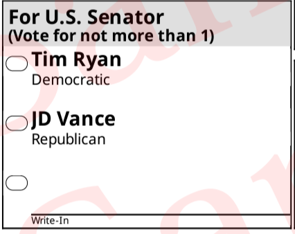
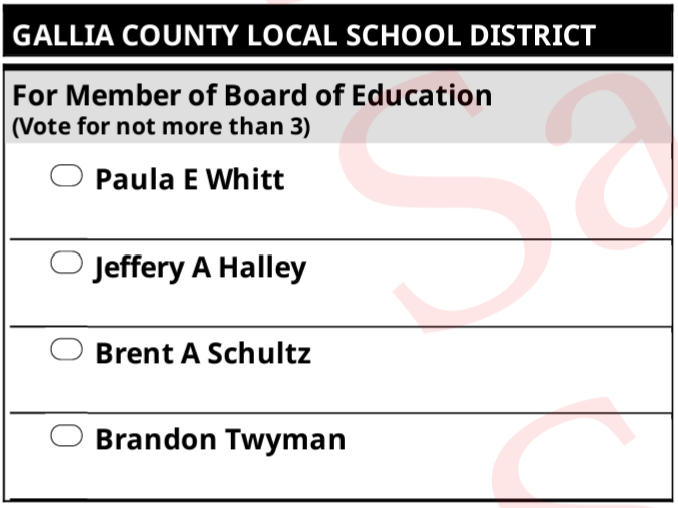
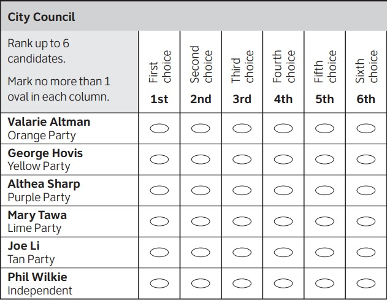
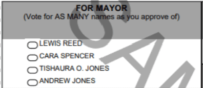

Locality using RCV in local elections;
RCV was not passed through a ballot
initiative in 2018-2022
Locality using RCV in local elections;
RCV was not passed through a ballot
initiative in 2018-2022Voting for Alternative Voting Systems
in U.S. Localities
In the 2022 November election, citizens of at least eight municipalities across the United States approved measures to change elections themselves. Specifically, these residents voted for ranked choice voting (RCV). RCV, or instant runoff voting, allows voters to rank all candidates for a given office in order of their preference. Proponents say RCV mitigates the effects of vote-splitting, allows voters to vote for third parties without fear of wasting votes, and encourages consensus.
Alternative voting methods have increased in popularity as Americans voice concerns about minority rule in federal, state, and local governments. Today, over 250 jurisdictions in the United States use a voting system other than plurality voting. Alaska and Maine use RCV in statewide elections, and dozens of jurisdictions use RCV in federal primaries, local primaries and generals, or for military votes.
Since 2018, over two dozen local jurisdictions have switched to RCV or approval voting through ballot initiatives. While ballot initiative rules vary by state, most cities allow for initiatives to go to the ballot through legislative referendum or citizen initiative. Mapping these amendments–and the cities, counties, and school districts that use RCV–may inform communities interested in exploring alternative voting methods.
Using this map:
Ballot initiatives on RCV or approval voting, and placed on the ballot between 2018 and 2022, are mapped using pie charts on this map. Localities that use RCV, but did not institute the method through a recent ballot initiative, are also marked.
Voting Methods:
Plurality Voting:
Plurality voting is the default for most elections in the United States. Plurality voting is an electoral process whereby a candidate who gets the most votes in the election wins–even if they win with less than 50 percent of the vote.
At-Large Plurality Voting:
Under at-large plurality voting, all voters cast their ballots for all candidates in the jurisdiction. At-large voting is common in City Council or Commission elections and is similar to RCV in that voters choose multiple candidates. For example, if five at-large positions are open on a City Council, each voter may vote for up to five candidates. The five candidates receiving the most votes citywide win those seats.
Ranked Choice Voting:
In ranked choice elections, voters rank candidates in order of preference. If no candidate is the top preference for more than 50 percent of voters, an instant runoff process occurs. The candidate with the fewest first-choice votes is eliminated. That candidate’s votes are distributed to the candidates listed as a second preference. The process continues until one candidate has gained majority support.
Approval Voting:
Approval voting allows voters to cast votes for as many candidates as they like in a given race rather than just one single candidate. The candidate that receives the most approval votes wins the election, similar to plurality voting.
Proportional Representation:
Under a proportional representation system, legislators are elected in multi-member districts rather than single-member districts. The number of seats won by political parties is proportional to the overall percentage of votes that those voters cast in the election. For example, if there are 10 seats in a district and one party receives 50 percent of the vote and therefore five seats; another party receives 40 percent of the vote and therefore four seats, and a third party receives 10 percent of the vote and therefore one seat.
Semi-proportional voting:
Under semi-proportional voting, voters have some number of votes and may distribute them among candidates in a prescribed method. The most common type of semi-proportional voting system is the single non-transferable vote system, in which voters have just one vote for a multi-seat election.
Data sources:
Information used on this map comes from Ballotpedia, Fair Vote, Pew, and local elections websites.